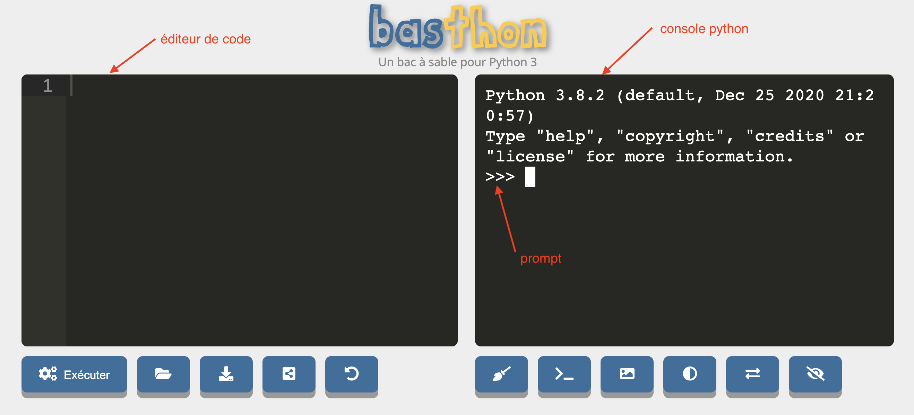

Interpréteur
L'interpréteur python comme intermédiaire entre le code python et son exécution.
Intermédiaire
Tout code python est exécuté via un interpréteur dont le but est de transformer le code python en code machine.
Ceci se fait toujours comme suit :
- on donne une ligne de code à l'interpréteur
- l'interpréteur exécute cette ligne (il transforme la ligne en langue machine et la fait exécuter par l'ordinateur)
- une fois la ligne exécutée, l'interpréteur redonne la main à l'utilisateur
- retour à l'étape 1.
Tant que l'interpréteur est actif, un mécanisme de stockage permet de conserver des objets pour une utilisation future via des variables.
L'interpréteur python est toujours présent lorsque l'on exécute du code python.
IL y a plusieurs façon d'exécuter du code python, celle qui montre le plus explicitement l'interpréteur est l'exécution en mode console.
Allez sur le site https://basthon.fr/ et choisissez menu console > python
Vous allez vous retrouver sur le site https://console.basthon.fr/
Vous devriez avoir quelque chose du genre :

Intéressons nous pour l'instant à la partie de droite nommée la console :
- l'interpréteur python utilisé est 3.8.2
- le prompt (les
>>>) indique que l'on peut écrire une ligne de code
Allons-y ! Exécutons notre premier programme :
A droite du prompt, écrivez le code print("Bonjour monde !") puis appuyez sur la touche entrée.
Vous devriez obtenir quelque chose du type :

Si vous n'obtenez pas ça, vous pouvez toujours recharger la page (menu afficher > actualiser cette page avec le navigateur chrome) pur recommencer avec un interpréteur vierge.
Ce qu'il s'est passé :
- vous avez écrit une ligne de code dans la console
- en appuyant sur la touche entrée, celle-ci a transmis la ligne à l'interpréteur
- l'interpréteur à exécuté la ligne de code (son résultat est affiché)
- une fois le code exécuté, la console reprend la main (le prompt a réapparu) et on peut recommencer en 1.
Ne nous arrêtons pas en si bon chemin et écrivons plusieurs lignes de code.
Dans la partie éditeur de code de la fenêtre copiez/collez le code suivant :
print("Bonjour :")
print("* François")
print("* Pierre")
print("* Odile")
Puis appuyez sur le bouton Exécutez.
Vous devriez obtenir quelque chose du type :

Il s'est passé la même chose que précédemment : chaque ligne a été exécuté à la suite par l'interpréteur, la seule différence est que la console a repris la main uniquement lorsque toutes les lignes de code ont été exécutées.
Le processus que l'on a décrit ici est toujours le même lorsque l'on écrit du code python, même si parfois l'interpréteur et la console sont cachés à l'utilisateur.
Principes de python
Nous allons utiliser la console et l'accès direct à l'interpréteur pour comprendre les principes de bases de python.
Commentaires
Commençons par ne pas écrire du python. Dans une ligne de code python, tout ce qui suit un # n'est pas lu.
Par exemple, le code suivant écrit dans une console ne produit pas d'erreur (il n'est même pas lu...) :
>>> # coucou python !
Alors que le même code sans # est interprété par python et comme ce n'est pas du python cela produit une erreur :
>>> coucou python !
File "<stdin>", line 1
coucou python !
^
SyntaxError: invalid syntax
Objets
Tout sur les objets courant que vous manipulerez en python.
Variables
Principe de l'affectation des variables en python.
Conteneurs
En plus des 5 types de bases, python met à notre disposition plusieurs objets qui contiennent d'autres objets. Parmi ces conteneurs, la liste est la plus utilisée.
Code python
à partir de modules
Installer python chez soit
Pour aller plus loin
Tutoriel python
Incontournable pour qui veut faire du python, il est plus que recommandé que vous suiviez le tutoriel python du site : https://docs.python.org/fr/3/tutorial/index.html
Notions avancées
TBD :
- mutable et non mutable
- itérateurs ?
- dictionnaires
- lambda
- list comprehension